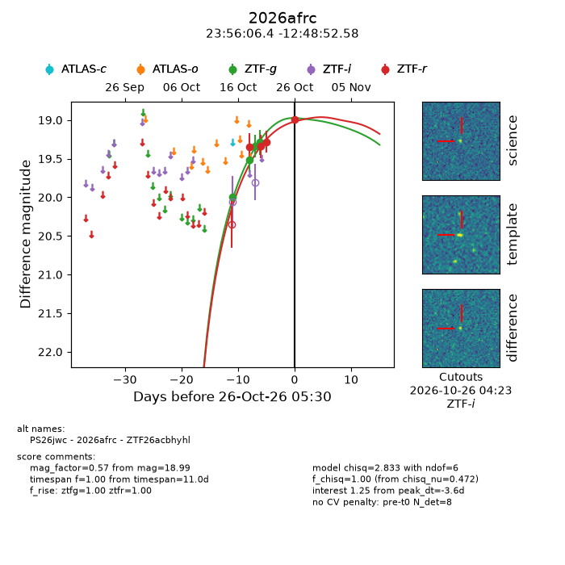
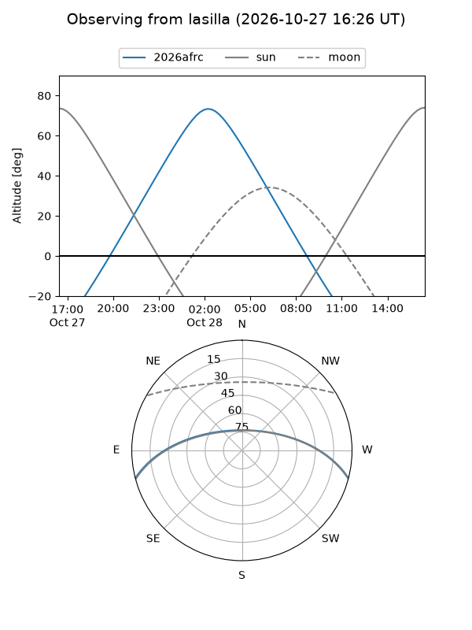
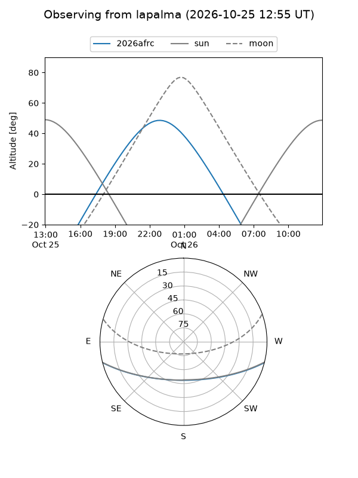
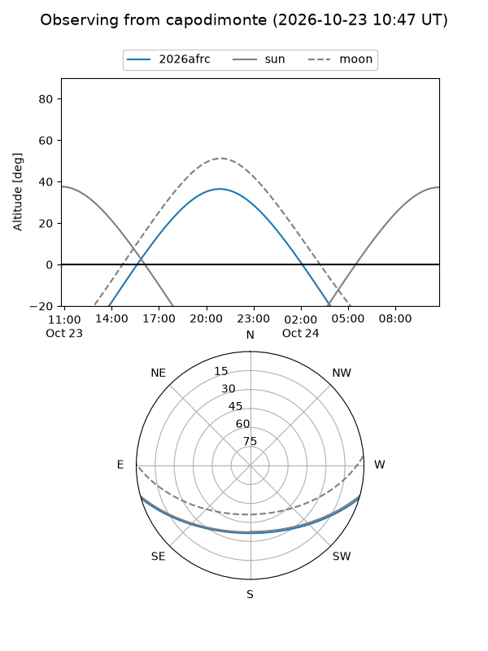
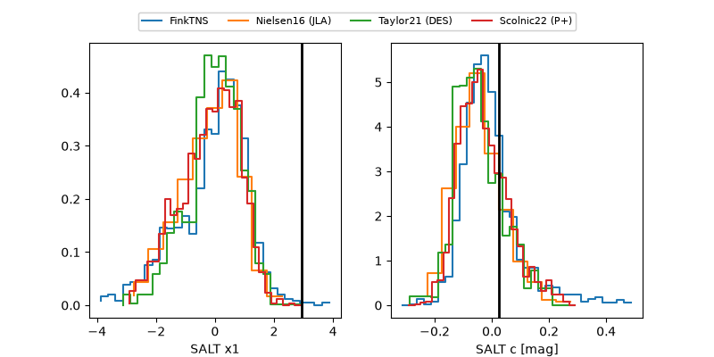

2026afrc
Target 2026afrc at 2026-10-26 05:31
Aliases and brokers:
FINK-ZTF: ztf.fink-portal.org/ZTF26acbhyhl
Lasair-ZTF: lasair-ztf.lsst.ac.uk/objects/ZTF26acbhyhl
ALeRCE-ZTF: alerce.online/object/ZTF26acbhyhl
YSE-PZ: ziggy.ucolick.org/yse/transient_detail/2026afrc
TNS name: wis-tns.org/object/2026afrc
Direct TNS query: direct search
alt names
ZTF26acbhyhl (ztf,fink_ztf)
2026afrc (tns,yse)
PS26jwc (panstarrs)
Coordinates:
equatorial (ra, dec) = 359.0267,-12.81461
equatorial (HMS+DMS) = 23:56:06.41,-12:48:52.58
galactic (l, b) = (78.0791,-70.69778)
Flags:
peak dt: -3.6
Photometry:
last ztfg=19.29, ztfr=18.99
4 ztfg, 4 ztfr detections
Lightcurve

Visibility



Additional plots
